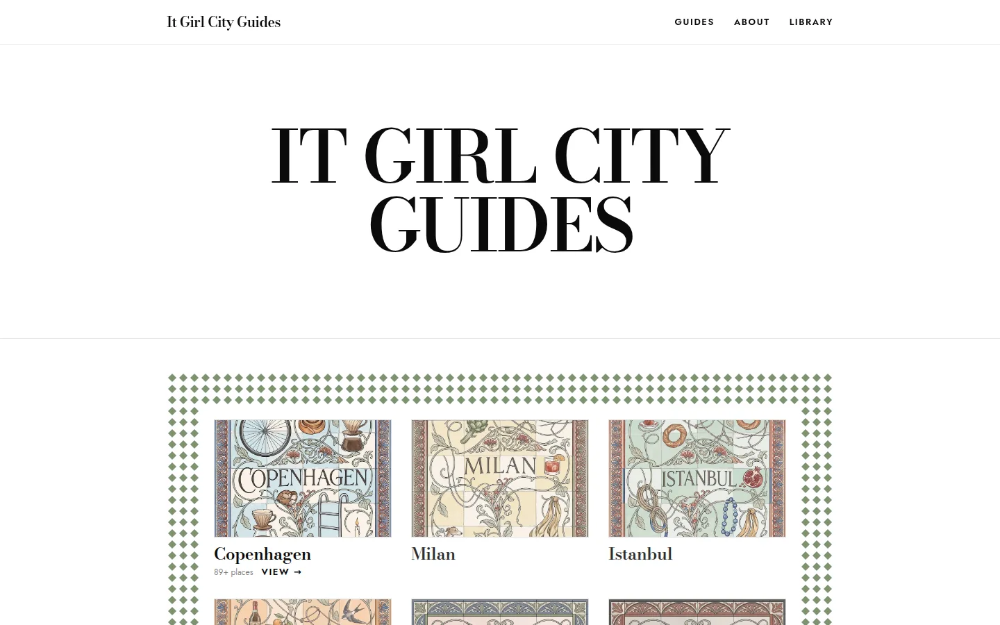
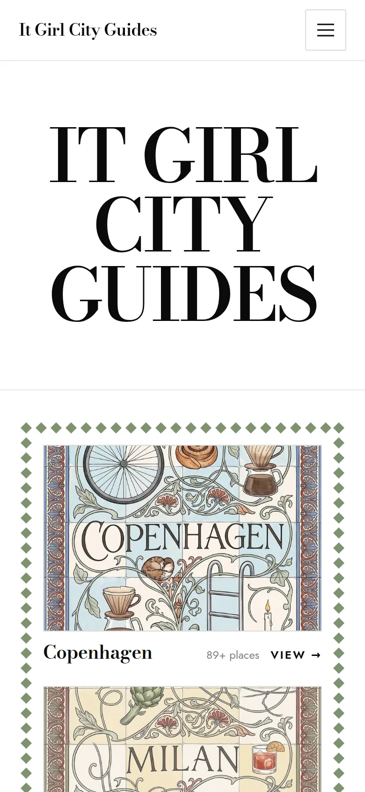
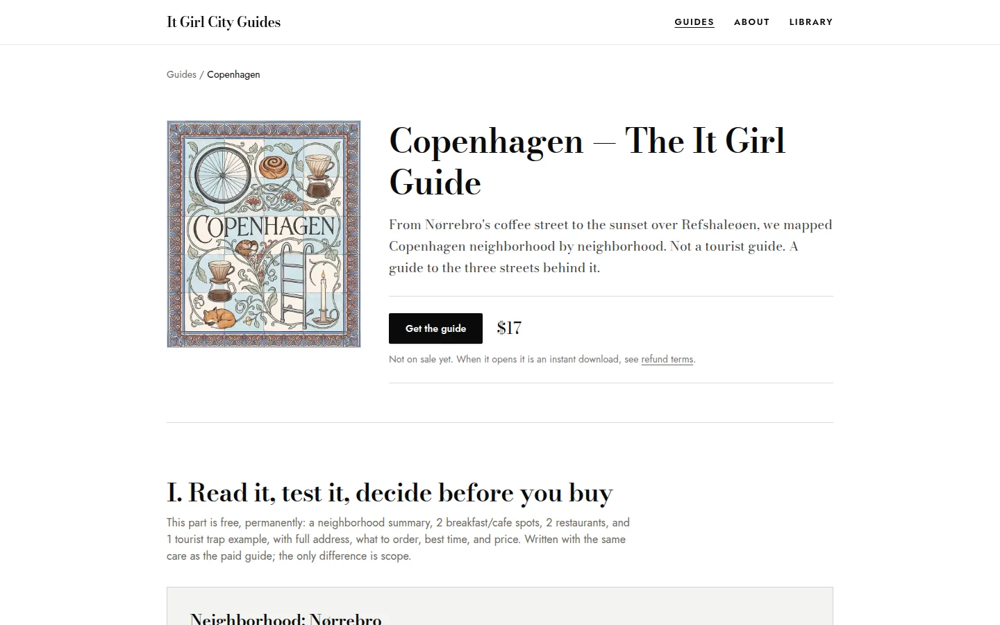
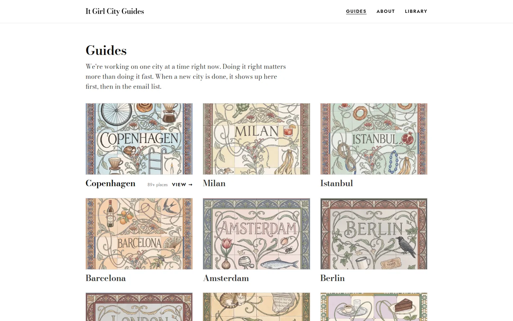
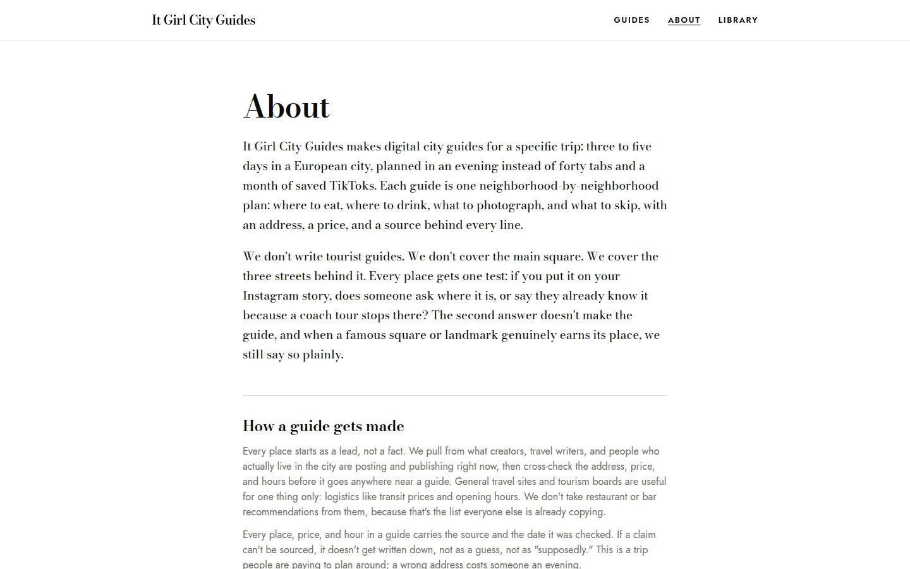

01 · Website · brand · content platform
It Girl City Guides


A digital travel-guide brand: European cities mapped neighbourhood by neighbourhood, written for a specific three-to-five-day trip instead of forty open tabs. I designed the brand and the site — a Bodoni wordmark, hand-drawn tile illustrations for every city, a guide layout with a free “read it, test it” section before the paid download, and an email list for new city drops.
Built as a static site with Astro and Tailwind, deployed from GitHub Actions. Fifteen cities in the catalogue, Copenhagen written first.
- Type
- Website & brand
- Role
- Brand, UI design, content system, development
- Type system
- Bodoni Moda · Jost
- Built with
- Astro · Tailwind · GitHub Pages
- Status
- Launching — domain being connected


